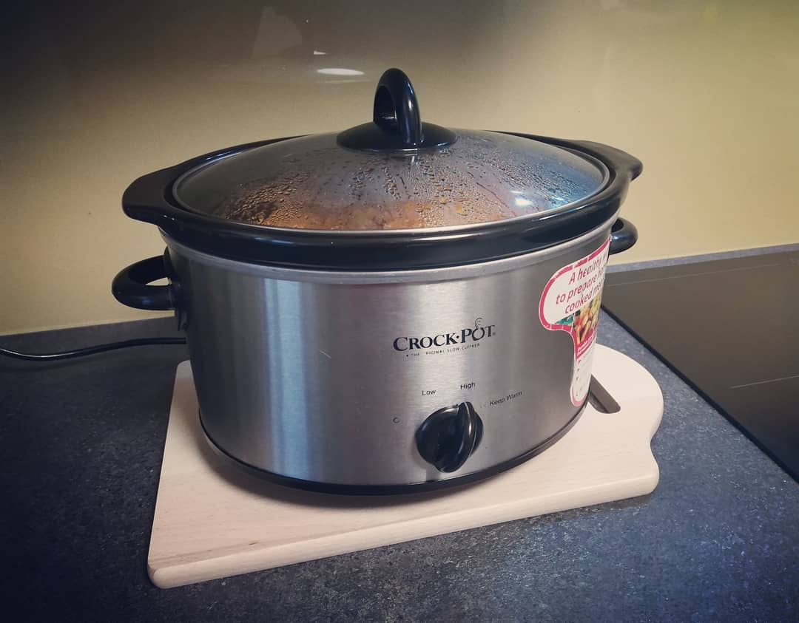

Segedínsky guláš podľa @slon550 — Normy Jedál
Vařím tak rychle jak běhám... 🤭🏃♂️🤣
Low carb Segedínský gulášek v pomalém hrnci...😉
PS: Ještě vydržet šest hodin... 😜😏🍽️
#lowcarb #intermittentfasting #cukrfree #bezcukruamouky #opavdovejidlo #pomalyhrnec #segedinskygulas #crockpot